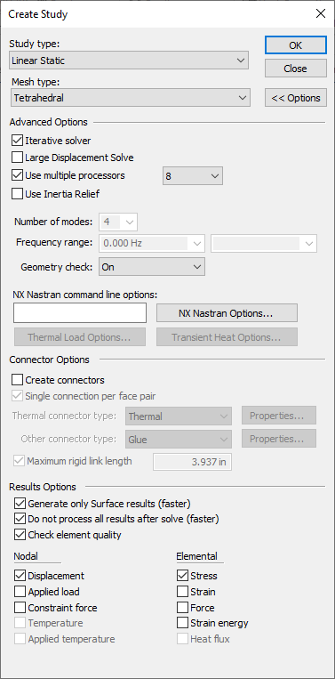

Modifying studies
There are many ways you can modify an existing finite element analysis study.
-
You can select a study name on the Simulation pane and use commands on its shortcut menu to rename it, delete it, solve it, and optimize the results by changing the study geometry.
-
You also can use the Modify Study command on the study shortcut menu to change the default advanced processing options and results display options in the Modify Study dialog box.

-
You can double-click a load, constraint, connector, or other object in the Simulation pane or in the graphics window to edit the study inputs. To learn how to edit simulation objects, see Modify and reuse analysis studies.
Coping and pasting studies for reuse
You can duplicate an entire study using the Create Copy shortcut command. You also can use the Copy (Ctrl+C) and Paste (Ctrl+V) commands to copy individual simulation objects from an existing study and use them as the basis for creating a similar study of a different type.
In the Part or Sheet Metal environment, you can:
-
Copy individual loads and constraints from one study to another. This is useful, for example, when you want to share constraints between static, modal, and buckling analysis studies of the same model.
-
Copy an entire study, which duplicates all loads, constraints, and even the mesh from the original study to the new study. You do not have to remesh the study.
In the Assembly environment, you can create multiple new and different studies from an existing study, by selecting different parts to include in each study. In an assembly containing Parts 1, 2, and 3, you could define:
-
Study A analyzes Part 1.
-
Study B analyzes Parts 2 and 3.
-
Study C analyzes Part 3 alone.
You can define the loads and constraints just once, and then copy and paste them between studies.
See Copy and paste studies or individual simulation objects.
How do I
Verify simulation material propertiesCreate a study
Create a study using a simplified model
Define a coupled study for thermal stress analysis
Assign units in studies
Define and review a transient heat study
Define a harmonic frequency response study
Learn more
Creating and using studiesUsing materials in studies
Structural studies
Thermal studies
Using steady state heat transfer studies
Coupled studies
Harmonic response studies
Create and solve a study using GD optimized model
Create and solve a study using an STL model
Defining thermal studies
Look up more details
Create Study (or Modify Study) dialog boxTransient Heat Options dialog box
Options: Harmonic Frequency Analysis dialog box